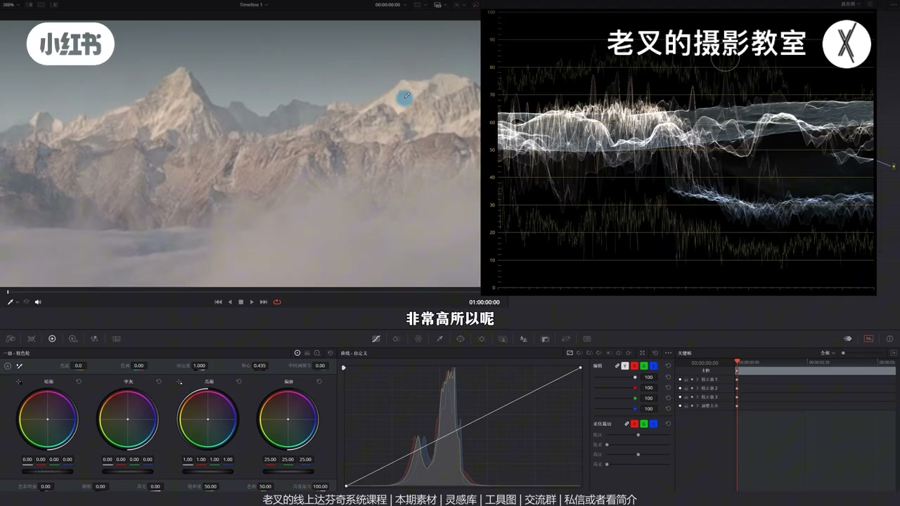
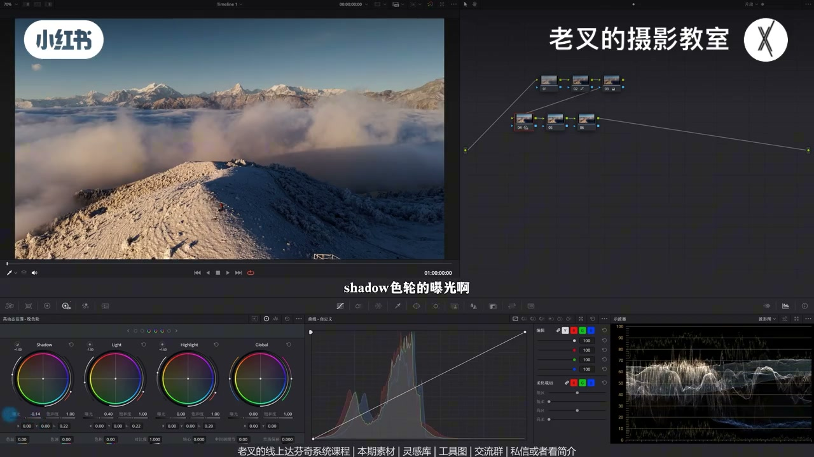
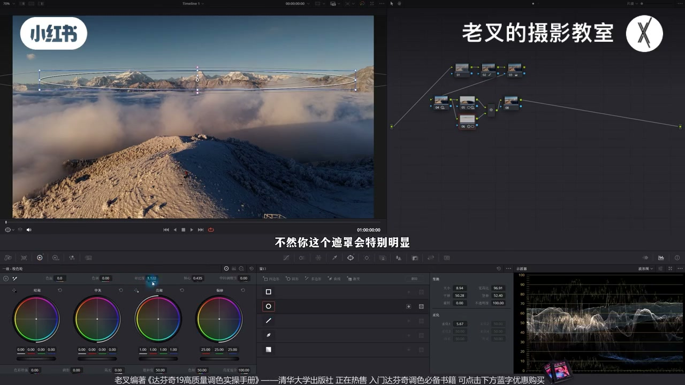
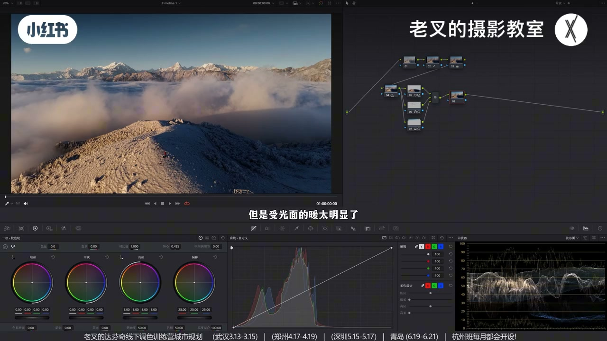
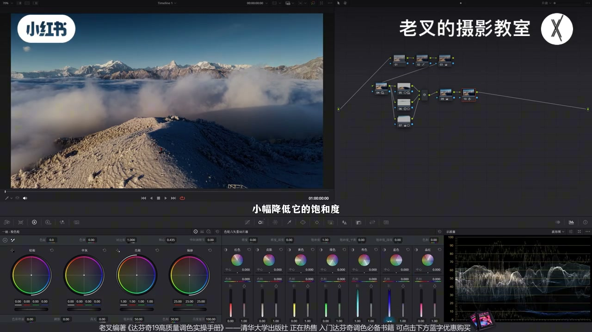
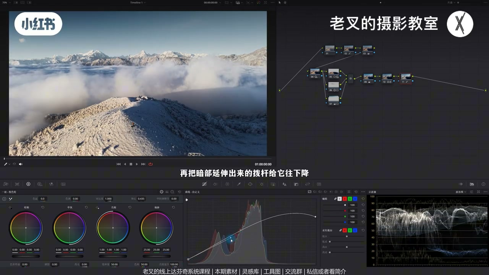

内容要点
针对「调成沙尘暴、想要偏暗电影感」的航拍雪山：雪/天应是最亮，其余用暗衬亮。还原大胆压暗部、护高光约80%；再用 HDR 找亮去灰。压近处抢戏山（压其高光）、强化远山、渐变压天空。颜色用青绿互补对冲受光黄，再增蓝青密度做灰蓝清冷；暗调饱和本不该高。可选柔和对比度、暗角或遮幅。
知识结构
最亮只能是雪或天；曲线大胆压暗、抬回高光约80%。
抬 Light、微压 Shadow 展开中间灰堆；可与还原分节点。
压近山高光；远山加对比+轴心；渐变压左上天（压阴影+提高光）。
单纯降暖饱和发闷；降温+降色调用青绿对冲，雪近白仍相对暖。
增蓝青密度+降饱和；可蜘蛛网再降暖；柔和对比度样条线+暗角/遮幅可选。
暗调雪山：先让雪/天成为真正高光，其余敢压；发灰就找亮。去「沙尘暴」黄用互补加色对冲，再把蓝压成耐看的灰蓝。暗调＝光不强＝饱和不宜高。
00:00-01:14立论：雪或天最亮，曲线大胆压暗
朋友调得像沙尘暴，想要偏暗电影感。雪山重点是有雪的山——雪是高反光，最亮要么天要么雪，其余尽可能暗，用暗衬亮。
原片雪受光已在80%以上，高光不能再猛提。曲线暗部大胆下压但勿死黑；全局压缩会伤高光，故高光段再上提保持约80%，略加饱和看清颜色。已比「坐着」乱调舒服。

01:14-02:01暗调要找亮：HDR 展开中间灰
波形大面积堆在中间仍偏灰。暗调只有暗不好看，要找亮：略抬 Light，可小幅降 Shadow（小心死黑），或直接加对比——重点去灰。
该步可并进还原节点；若后续常改，建议单独节点以免从头改。

02:01-03:38运镜主体：压近山、提远山、压天空
前推运镜主体是远处雪山，近处山梁因比重抢戏。其暗已够，抢的是高光——用 Light 压高光，Shadow 可视情况微降求过渡。
远山遮罩少加对比配合轴心更立体，避免遮罩太脏。天空左上不够暗则渐变遮罩再压阴影并略提高光。三节点后曝光分布更清晰。


03:38-05:05颜色：互补对冲掉受光黄
暗调第一反应偏冷；片中蓝已有，但受光暖太明显才像沙尘暴。单纯降暖饱和会失色发闷。应用互补对冲：受光偏橙黄，对面是蓝青——降温加蓝、降色调加绿。
目标让受光尽量淡；雪可近白，但整体受光仍相对最暖——色相相对性。也可用偏移色轮直接搓。

05:05-07:49灰蓝清冷 + 可选柔和对比度/暗角/遮幅
蓝太多则切片增青蓝密度（降明度并略降饱和），再降青蓝饱和，做出灰蓝耐看、清冷。暗调光不强，饱和本不该高；暖仍多可在后节点用向量略降暖饱和并归拢杂色相。
要更强风格：柔和对比度开可编辑样条，压高光端并护波谷，暗端上提再压暗部波谷——压其余后高光更显。可再暗角或 2.35:1 遮幅藏碍眼近山。思路其实简单。

完整转录（271段）
以下文本由 Whisper medium 模型自动转录，可能存在少量识别误差，已尽可能修正。
上周有位朋友问我这个画面要怎么调
他觉得自己调得像沙尘暴
想要电影感偏暗一些的那种效果
那这要怎么做呢
我们简单分析一下
雪山镜头
重点一定是有雪的山
对吧
那雪是高反光面
我们就可以得出一个结论
画面中最亮的要么是天
要么就是这个雪
这样才能够让整体呈现出偏暗掉的结果
对吧
也就是让其余部分尽可能的暗
用暗来衬托亮
我们来看操作
首先还是还原我们建立几个节点
还原非常关键
我们看到原片的雪
我们用播情图来看
此时雪的受光面
已经在80以上的曝光了
非常高
所以我们对于高光就不能提亮太多
再高要过曝了
我们要大幅的压
所以我们要把曲线暗部这一段
给它往下压
大胆压
但是不要让它死黑了
但又因为曲线是全局工具
它的高光也会被压缩
对吧
所以我们也要把曲线高光这一段
给它往上提
让高光保持在80左右
差不多是在这个地方
可以暗部再往下走一点点
可以的
此时是不是就已经比坐着的结果舒服一点了
对吧
然后我们又可以给它稍微加一点点饱和度
不用加太多
加饱和度的目的
其实对于这个画面来讲
是让我们可以把画面颜色看得再清楚一点
然后建立几个节点来到第二排
我们要再一次的强化一下影调关系
再看播情图
整体其实还是有点偏灰的对吧
因为它大面积都堆积在了中间部分
我们要把它展开
之前说过暗调画面
我们要找亮
只有暗是不好看的
所以我们要稍微再提高一点
Light色轮的曝光
大概到这个程度就差不多
让它高光给它往上走一点
然后也可以小幅的降低一点点
Shadow色轮的曝光
但是不要降太多
你要小心它不要死黑了
当然你直接提高对不对也可以
重点我们是要解决画面整体发灰的一个问题
之前有个评论问到
这个操作能不能放在2号节点还原的时候一起做呢
当然是可以的
如果说你这个行为是必做的
那就放一起没问题
如果说你后续可能要调整的话
那我其实建议你单独来
这样我们就不用从头修改了对吧
好我们继续来
这个画面中我们看运镜是往前推的对吧
那么主体一定是远处的雪山
而不是近处的这个小山间
但又因为画面笔重的问题
近处的山间还是比较抢际的
所以我们可以给它画一个遮罩
把它稍微压暗一点
怎么压呢
我们不能是全局压
我们要明确调整的是什么
其实它的暗部已经足够暗了
它真正抢际的是因为它的高光太强了
所以我们要降低的是高光
我这里用HDR色轮的Light色轮
给它把高光给它往下压
至于Shadow色轮也就是它的暗部要不要压
你可以看情况
我觉得稍微降低一点点是可以的
让它的过度能够舒服一点
我觉得到这个程度差不多
然后主体肯定要强化对吧
我们也可以对远处的雪山画一个遮罩
然后对于这一部分
我们可以稍微给它增加一点对比度
少加一点
不然这个遮罩会特别明显
我们也可以配合轴心
让它的曝光再符合这个场景
也同样是为了遮罩避免不要太明显
这个行为就可以让远处的山更加立体一点
原本还是有点发挥的
最后就是天空
天空虽然它带了一点层次
左上角是暗一点对吧
但是我觉得还不够
所以我又画了一个渐变遮罩
从左上往右下
拉了一个渐变遮罩
再一次的压按左上角的部分曝光
降低一点阴影滑块
同样的还是那句话
要压按就不能止压按还得提亮
所以我又提高了一点高光滑块的曝光
大概是这个效果
这个遮罩可以转一点了
这样挺好的
压按天空同样可以让我们视线聚焦
这三个节点做完
我们就能让画面的曝光分布更加清晰
这个的柔化可以开得再大一点
对吧 效果还是挺好的
接下来我们就可以开始调颜色了
素材大家也可以免费领取过去之后跟着做一做
作者也是同意分享的
还有达分析的线上系统课程和线下调色训练营
过年期间我应该会做一定的折扣
可以私信或者看我剪辑来找我就行了
说回画面
我们要调整颜色暗调结果
大家第一时间想到的是什么颜色倾向
是不是偏冷调
目前画面中蓝色其实是有的
但是受光面的暖太明显了
这也是导致作者调得像沙尘暴的原因
我们要去掉这些暖
可是如果说我们单纯的降低暖的饱和度
我觉得不是特别好看
它就是单纯的失去颜色
之后有点发闷发灰
对吧 不舒服
那该怎么办
我们可以用互补色来对冲
用加颜色的方式来去掉颜色
怎么做
我们可以看到色轮
目前受光面的颜色差不多在这个位置
对吧
它是带了一点橙色的黄
那我们就要去找它对面的颜色
也就是蓝青色
蓝青色就是蓝色加绿色
所以我们可以稍微降低一点色温
也就是给画面加一点蓝
再降低一点色调
给画面加一点绿
那这样我们就可以用青蓝色
来对冲掉这些黄色
当然你用偏溢色轮直接搓也行
如果你搓得准的话
我们要的目的是让受光面的颜色
尽可能的淡
大概到这个效果就行了
那此时我们放大看远处的雪山
它这些雪已经无限接近于白色了
没有一开始那么黄了
但是对于整体来说
受光面依旧是最暖的结果
所以这就是色相的相对性
我们要保证受光面相对暖就行了
但这样做完了之后
会带来一个新问题
蓝色太多了对吧
所以我们可以再建立一个节点
来解决新产生的问题
这时候我们可以利用色轮流向切片工具
把青色和蓝色的密度都给它增加
增加密度是降低明度的同时
小幅降低它的饱和度
然后再降低点饱和度
因为我觉得降低饱和度的力度还不够
我们把青色饱和度往下降
蓝色的饱和度也给它往下降
大概到这个结果
让蓝色不要那么抢眼
带上一点点那种灰蓝灰蓝的感觉
是不是很耐看
这时候的画面就会有清冷的感觉了
我们要知道的是
我们看到的任何颜色
或者说任何的物体
只要能被看到
它一定是靠光的反射来达到的
而暗调画面就注定了光不强
那既然光不强
那所有的颜色饱和度就一定不会太高
那此时如果你觉得暖的还是有点多的话
你可以不用回到9号节点去做
太麻烦了
你这个数值你要调有点抽象
你不如在10号节点
用蜘蛛网稍微给它把暖色的饱和度给它降一降
这时候稍微降一点就问题不大了
大概到这个程度就差不多
我其实觉得原本中间这部分有点杂色
我们把暖色部分给它饱和度往下降了之后
也能去掉一部分这里的杂色
如果你觉得这里有一点点紫的话
也可以把这里的色相给它稍微归隆归隆
大概到这个程度挺好的对吧
此时画面基本上就不错了
我们可以与还原后的画面出来对比
效果挺好的
那如果说你还希望风格感能够更强的话
可以来个柔和对比度
力度可以做得大一点
我们打开曲线右上角三个点中的可编辑的一条线
把高光这一端给它往下降
再把高光延伸出来的波感给它往上提
这一步是为了保护高光
然后再把暗部这一端往上提
再把暗部延伸出来的波感给它往下降
这一步是让暗的能够更暗
我觉得大概到这个程度就差不多
可以再来一点
你看
当我们把气游部分压得再暗一点了之后
就算高光也被小幅的降低
但是你从画面整体来看
高光就变得更加明显
这个效果挺好的对吧
当然你可做可不做
最后也可以考虑来一个暗角
再一次的收缩视线
其实重点还是希望能够
让这个近处的小山间能够再暗一点
把这个遮罩揉化开大一点
然后把它反转一下
让它暗部给它往下降
然后再提高一点高光滑快
要压不能只压嘛对吧
那这个暗角当然也是可做可不做
你觉得不需要就不做了
那这样呢
我们就可以把画面从这样调成这样
效果非常好对吧
其实这个思路是非常简单的
那如果说你还是觉得
下方这个山间太碍眼的话
也可以考虑给它来一个遮浮
来个2.3 5比1的遮浮给它遮一遮
也挺好的对吧
素材大家别忘了领取
还有线上和线下的课程
这应该是我年前倒数第二期视频了
年底的活实在太多了
没时间做视频
年前的最后一期
会是小明同学拍的短片
非常非常牛的片子
大家可以期待一下
讲到这里
如果你觉得对你有帮助的话
还希望多多三连
好了
这期就到这里
886